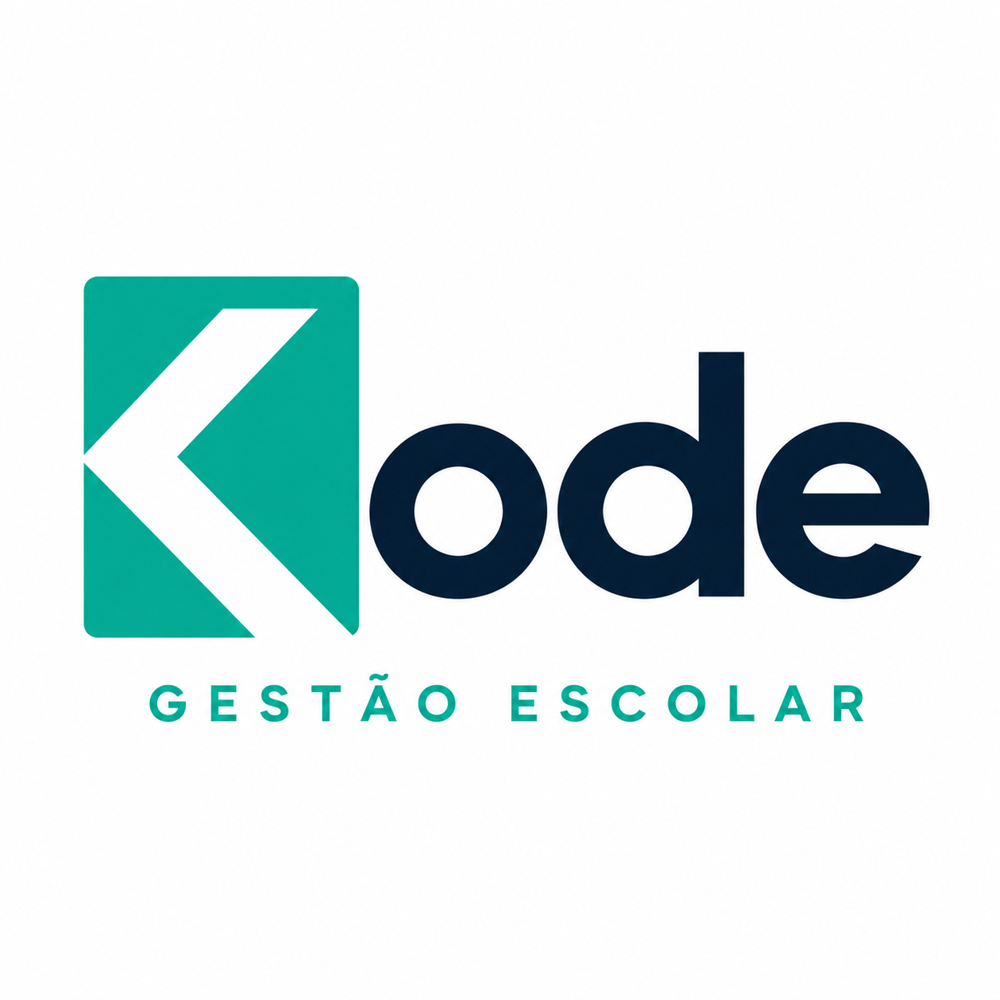
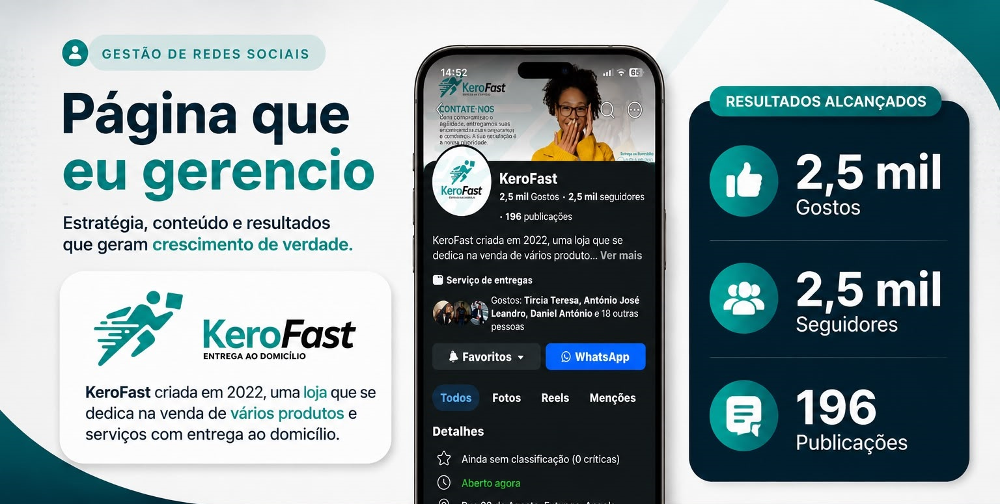
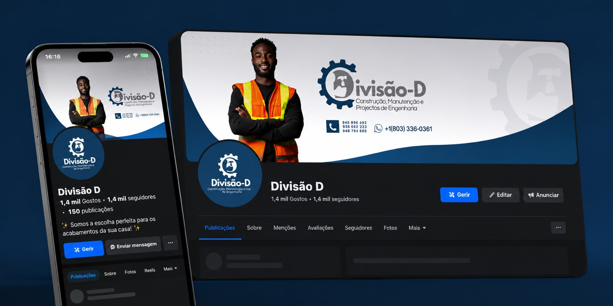
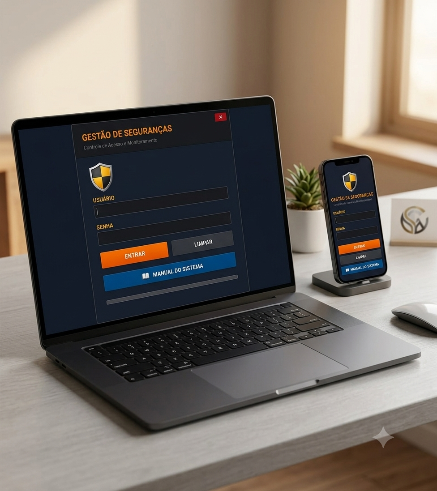
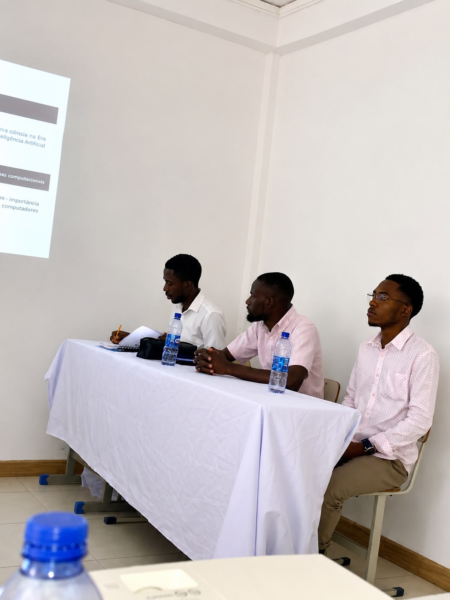

Gestão de Mídias Sociais
Planeamento, criação e gestão de conteúdos para redes sociais, com estratégias que aumentam a visibilidade da marca, o envolvimento do público e a presença digital.
Profissional de TI com experiência em suporte, redes, desenvolvimento de sistemas e gestão de mídias sociais, criando soluções digitais eficientes e inovadoras.
Sou profissional de TI com atuação em suporte técnico, desenvolvimento de sistemas, gestão de redes e mídias sociais. Trabalho de forma autónoma como monitor de informática, auxiliando estudantes da área de Informática e desenvolvendo conhecimentos práticos em suporte, programação e administração de redes.
Ao longo dos últimos anos, tenho colaborado com pequenas empresas na gestão de mídias sociais, desenvolvendo estratégias de conteúdo, fortalecendo a presença digital das marcas e aumentando o seu alcance nas plataformas online.
Paralelamente, continuo a atuar na área de TI, prestando suporte técnico, acompanhando estudantes de Informática e desenvolvendo competências em gestão de redes. O meu compromisso é oferecer soluções criativas e eficientes que aliem tecnologia, comunicação e resultados.
Soluções digitais personalizadas para fortalecer a sua presença online, otimizar processos e impulsionar o crescimento da sua empresa.
Planeamento, criação e gestão de conteúdos para redes sociais, com estratégias que aumentam a visibilidade da marca, o envolvimento do público e a presença digital.
Instalação, manutenção e resolução de problemas em computadores, sistemas e equipamentos, garantindo o bom funcionamento da infraestrutura tecnológica.
Criação de sites institucionais, portfólios e aplicações web modernas, rápidas, responsivas e desenvolvidas para oferecer a melhor experiência aos utilizadores.
Configuração, monitorização e manutenção de redes de computadores, assegurando conectividade, desempenho, segurança e estabilidade.
Desenvolvimento de sistemas personalizados em C# e .NET para automatizar processos, gerir informações e aumentar a produtividade de empresas e instituições.
Acompanhamento de estudantes e profissionais, oferecendo apoio em programação, redes, suporte técnico e utilização de ferramentas informáticas para fortalecer os seus conhecimentos práticos.
Alguns dos projetos e serviços que desenvolvi, combinando tecnologia, design e soluções digitais para empresas, instituições e profissionais.

Criação da identidade visual para a Kode, um projeto futuro de gestão escolar — desenvolvimento de logótipo, paleta de cores e conceito de marca.
Desenvolvimento completo da minha identidade visual profissional, incluindo logótipo de assinatura, versão para redes sociais (avatar) e manual de marca pessoal.

Estratégia completa de conteúdo e gestão para a página do KeroFast, focada em crescimento orgânico, interação com o público e resultados mensuráveis.

Estratégia de posicionamento digital e gestão de conteúdo para uma empresa de construção, manutenção e projetos de engenharia. Foco em gerar confiança e autoridade.

Sistema de controlo de acessos e monitoramento desenvolvido sob medida para a cliente Francisca Bengue, com interface moderna e foco em segurança.

Acompanhamento prático e teórico de alunos da área de Informática, atuando como mentor, avaliador e facilitador do aprendizado em programação, redes e suporte técnico.
Preencha o formulário e entrarei em contacto o mais brevemente possível para conversarmos sobre a sua ideia.